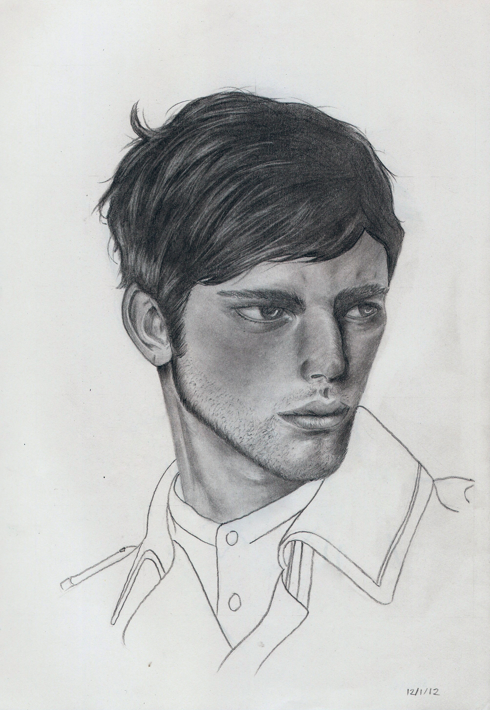
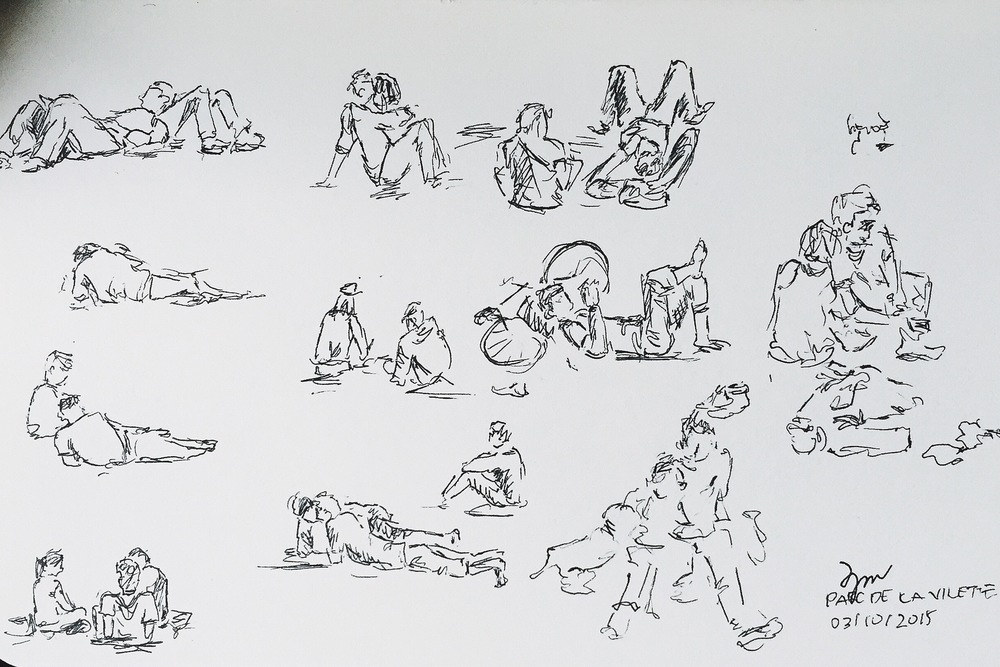

Sketches
Graphite
Selected drawings of my attempt to master realism in portraits.

Urban
Quick sketches drawn from life to train my eye on perspective drawing.
People
Capturing motion's complexity and transience.
